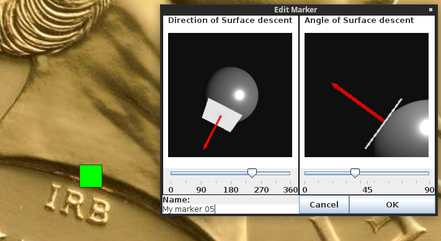

Marker should be representing surface shape at its placement. For this purpose you will have to set up
surface descent and angle of such descent in your marker.
Example of correct setup:

You can name markers to your liking.
Calculated results will depend lot on the marker's setup so take your time and experiment
for the best results.